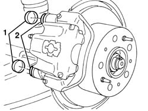
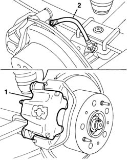
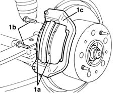

3310B30 REAR BRAKE DISCS R R
- Path
- Procedures > 33 BRAKING SYSTEM > 3310 DISC BRAKES > 3310B REAR DISC BRAKES > 3310B30 REAR BRAKE DISCS R R
- Kind
- repair procedure (removal / refitting; the operation number is the code)
- Applies to
- all engines; all production periods
- Interactive page
- https://sloeber94.github.io/elrnDB-fDct/en/#/244001084
Applies to: all engines; all production periods
 Removing
Removing
 Refitting
Refitting- Remove the rear wheel.
1. Release the protective boots.
2. Undo the brake caliper fixing bolts.

Applies to: all engines; all production periods
1. Move the brake caliper slightly.
2. Undo the hydraulic system pipe from the brake caliper, collecting the brake fluid that comes out.

Applies to: all engines; all production periods
1. If necessary, remove the brake pads (1), then unto the bolts (1b) and remove the brake back plate (1c).

Applies to: all engines; all production periods
Refitting
Removing- If removed, position the brake back plate and tighten the new bolts.
 | Value - daNm | Fastening | Component | Ø |
|---|---|---|---|---|
. | 17 -25 daNm | Bolt | REAR BRAKE CALIPER BRACKET | M14x1.5 |
- Tighten the hydraulic system pipe to the brake caliper.
| Value - daNm | Fastening | Component | Ø |
|---|---|---|---|---|
. | 1.2 -2.2 daNm | Nut | BRAKING SYSTEM PIPE CONNECTORS | M10x1 |
- Place the brake caliper in position.
- Tighten the new brake caliper fixing bolts.
- Fit the protective boots.
Op. 0010T65 HYDRAULIC BRAKE SYSTEM BLEED AIR
- Refit the wheel.
- Check that the brakes are working.